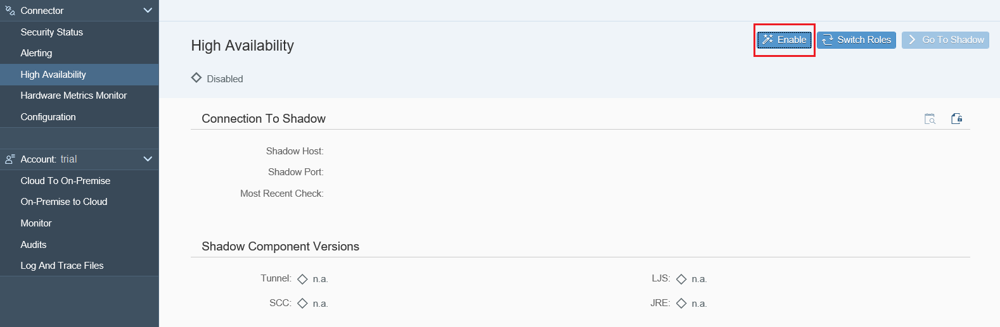
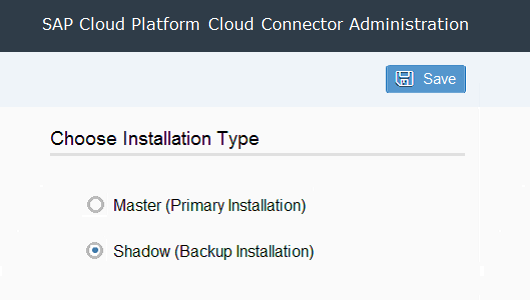
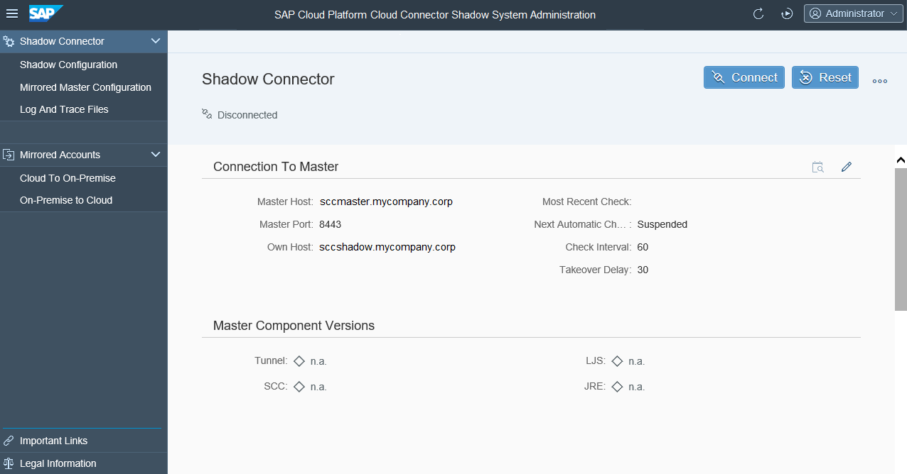
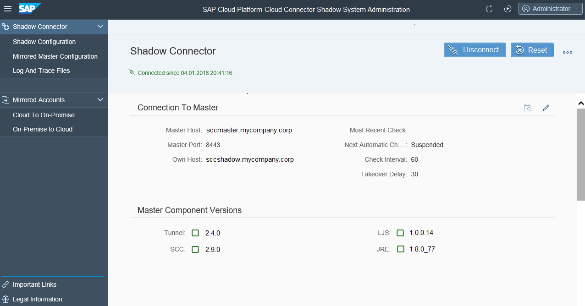
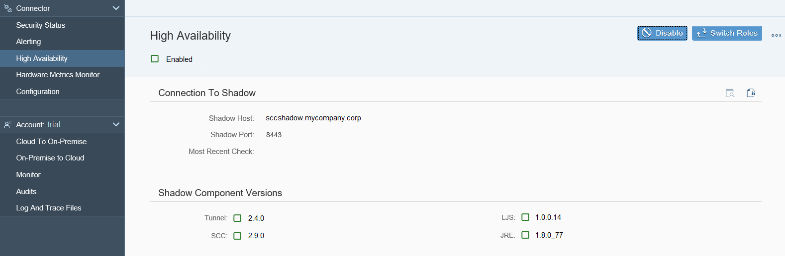

The Cloud connector allows you to install a redundant instance, which monitors the main instance.

If this flag is not activated, no shadow instance can connect itself to this Cloud connector. Additionally, when providing a concrete Shadow Host, you can ensure that only from this host a shadow instance can be connected.
The shadow instance must be installed in the same network segment as the master instance. Communication between master and shadow via proxy is not supported. The same distribution package is used for master and shadow instance.




In case it does not recover automatically, disconnect/connect the shadow, which will trigger a complete configuration transfer.